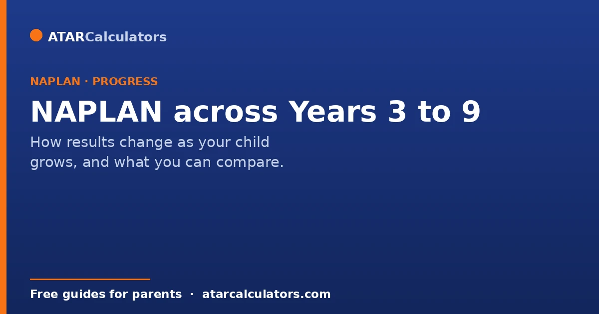
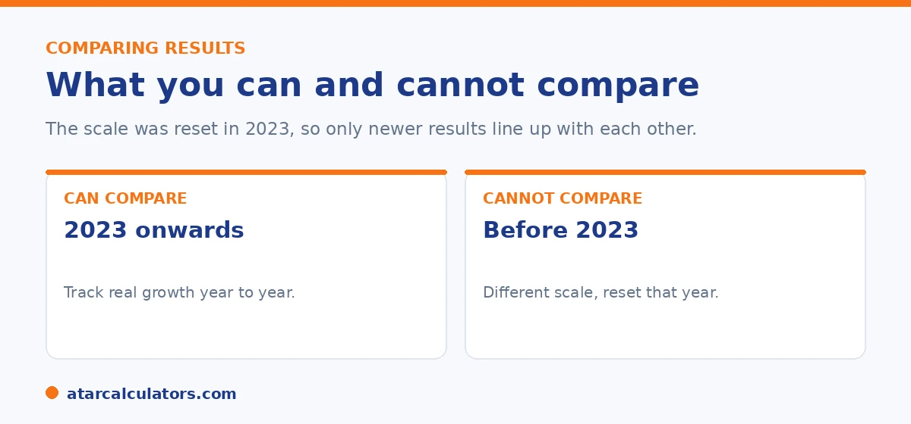

Here is the short version. NAPLAN tests Years 3, 5, 7 and 9 on a common scale, and the expected level rises with each year. You can compare your child's results from 2023 onwards to see real growth. You cannot compare results from before 2023 to newer ones, because the scale was reset that year. This guide explains how results change across years and how to track progress fairly.
As your child sits NAPLAN every two years, it is natural to put the reports side by side. Done well, this shows real growth. Done poorly, it can give the wrong picture.
The key is knowing what lines up and what does not. To track a recent result, use our NAPLAN band calculator.
Key takeaways
- NAPLAN tests Years 3, 5, 7 and 9 on a common scale.
- The expected level rises each year, so more is needed to stay at Strong.
- You can compare results from 2023 onwards to track growth.
- You cannot compare pre-2023 results to newer ones. The scale was reset.
- Staying at the same level across years is solid progress.
- Look at the scaled score for finer growth.
How NAPLAN changes from Year 3 to Year 9
NAPLAN uses one common scale that runs through all four year levels. This lets the test track growth on a single continuous measure, from Year 3 all the way to Year 9.

Because skills grow more complex with age, the expected level rises each year. The score needed to reach Strong in Year 9 is much higher than in Year 3. So your child is measured against a moving, rising bar.
What you can compare
Within the current system, you can compare your child's results from 2023 onwards. So a Year 3 result in one year and a Year 5 result two years later can be compared on the same scale, to see real growth.
The clearest signal is the scaled score, which sits on the common scale. If your child's scaled score rises from one test to the next, that is genuine learning, even if the proficiency level stays the same.
What you cannot compare
You cannot compare results from before 2023 to results from 2023 onwards. In 2023, NAPLAN reset its scale and changed from bands to levels. The old numbers and the new ones do not line up.
So if you have a 2022 band and a 2024 level, do not try to read growth between them. Treat them as two separate systems. For how the old bands worked, see our bands by year level reference.
Want to track a recent result on the current scale?
Open the NAPLAN band calculator →What good progress looks like
Here is the part that reassures most parents. Staying at the same level across two tests is solid progress, not standing still. Because the bar rises each year, holding Strong from Year 5 to Year 7 means your child kept pace with rising expectations.
Moving up a level, such as Developing to Strong, is excellent. And even within a level, a rising scaled score shows real growth. Look at the level and the scaled score together.
The reason holding steady counts as progress is worth understanding. This is because it changes how you read a report and spares a lot of needless worry. NAPLAN sits your child against expectations that rise with each year level. And the boundaries between proficiency levels move up accordingly. So a child who is Strong in Year 5 and Strong again in Year 7 has not stalled. They have kept pace with a higher standard. That means real learning has happened even though the label is unchanged. This is why the scaled score matters alongside the level. Two children both labelled Strong in consecutive tests may have very different underlying scores. And a scaled score that climbs from one sitting to the next shows genuine growth even if it does not cross into a new level. The most informative way to read progress, then, is to look at both together. The level tells you where your child sits against the year's expectations. And the change in scaled score tells you how much they have grown. Moving up a level is clearly excellent, holding a level is solid, and even within a level a rising score is a good sign. What would genuinely warrant a closer look is a scaled score that falls or a drop to a lower level. That is worth discussing with the teacher. Otherwise, steady or rising results, at any level, generally mean your child is progressing as they should.
How to track progress over the years
Keep each report in one place so you can line them up later. Each time a new one arrives, note the level and the scaled score for each area, and look for the direction of travel.
Remember that one report is a snapshot. The trend across several reports tells you far more than any single result. For what counts as a good result at each year, see our guide on a good NAPLAN score by year level.
Common questions
How does NAPLAN change from Year 3 to Year 9?
NAPLAN uses one common scale across all years, and the expected level rises each year. The score needed to reach Strong in Year 9 is much higher than in Year 3, because older students are expected to know more.
Can I compare my child's results from different years?
You can compare results from 2023 onwards, since they sit on the same scale. You cannot compare results from before 2023 to newer ones, because the scale was reset in 2023.
What growth is expected between tests?
Enough to keep pace with the rising bar. Holding the same level from one test to the next is solid progress. A rising scaled score, or moving up a level, shows strong growth.
Do expectations rise each year?
Yes. The expected level rises with each year level, because skills grow more complex. Strong in Year 9 sits much higher on the scale than Strong in Year 3.
Is staying at the same level a problem?
No. Because the bar rises each year, staying at the same level means your child kept pace with higher expectations. That is solid progress, not standing still.
What is the best way to see real growth?
Look at the scaled score, which sits on the common scale. A rising scaled score from one test to the next is genuine learning, even if the proficiency level stays the same.
Track a recent result on the current scale
Enter a NAPLAN result and year level to see the indicative level. Free, and no signup.
Open the NAPLAN band calculator →Related guides
This guide is general information for parents, not formal advice. NAPLAN reporting can change, so always check the official details on the National Assessment Program (NAP) site, and talk to your child's teacher. Reviewed by the ATARCalculators Editorial Team.